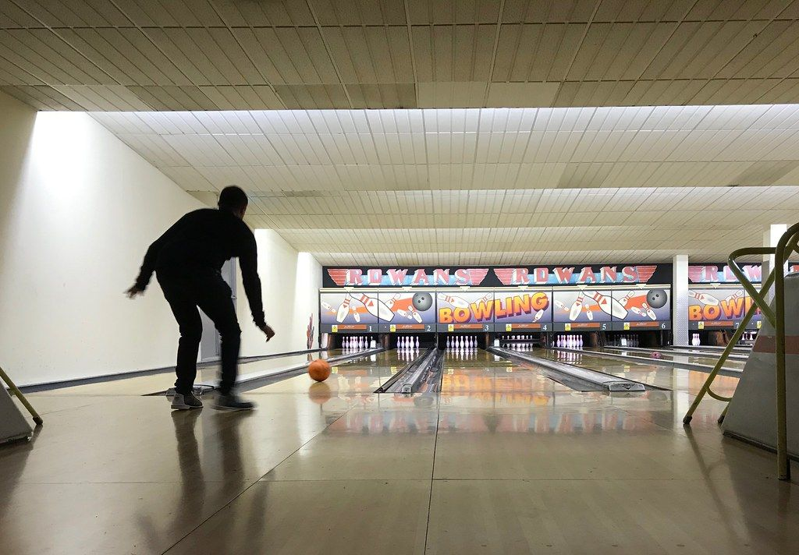

Bowling · Brick Lane
All Star Lanes, Brick Lane
- Retro-style bowling on six lanes, with karaoke booths, arcade games and an American diner menu.
- £10 to £14 per game, cheaper off-peak.
- Cheapest time to go is Monday, or before 4pm Tuesday to Thursday.
- 18+ only after 7pm.

Who's it for?
All Star Lanes, Brick Lane is best for friends, and best weekday daytimes, weekend afternoons and after work.
Group
- Date★★★★★Retro lanes and a diner, cheapest on Mondays
- With friends★★★★★Up to 7 a lane, plus karaoke booths
- Work social★★★★★Big groups split across lanes; £7pp minimum spend
- Family★★★★★Kids welcome with an adult until 7pm, £9.50 under-12s
Best time
- Weekday daytime★★★★★£10 a game before 4pm, Tuesday to Thursday
- Weekend afternoon★★★★★Kids welcome until 7pm; peak £14 a game
- After work★★★★★Peak £14 a game from 4pm
- Late night★★★★★18+ only after 7pm
Our rating, based on price, age rules, group sizes and opening hours.
Photo: Matt Brown / Flickr, CC BY 2.0
What is All Star Lanes, Brick Lane?
All Star Lanes is a 1950s-style bowling alley built around cocktails and American diner food as much as the lanes themselves. It has six retro bowling lanes, private karaoke booths, arcade games and a cocktail bar styled like a Prohibition-era speakeasy.
Brick Lane is one of four All Star Lanes sites in London, alongside Holborn, White City and Stratford. The chain started at Holborn in 2006.
How does it work?
Each game reserves about 10 minutes per person, so a group of six should plan for roughly an hour on the lane. One lane holds up to 7 people; larger groups are split across multiple lanes, with playing time adjusted to match.
You can also book two games back to back at a set price rather than paying the single-game rate twice, see the pricing below. Karaoke, darts and the arcade games are booked and charged separately from bowling.
How much does it cost?
| Rate | Price | When |
|---|---|---|
| Off-peak | £10per game | All day Monday, and Tuesday to Thursday before 4pm |
| Peak | £14per game | Tuesday to Thursday from 4pm, and all day Friday to Sunday |
How much is All Star Lanes, Brick Lane off-peak?
Off-peak costs £10 per person per game, covering all day Monday and Tuesday to Thursday before 4pm.
How much is All Star Lanes, Brick Lane at peak times?
Peak costs £14 per person per game, covering Tuesday to Thursday from 4pm, and all day Friday to Sunday.
What is the food and drink like?
The menu is American comfort food and shareable plates, built to eat between frames, alongside handcrafted cocktails and a range of zero-alcohol drinks. There's a separate kids' menu for younger visitors. The full menu is on All Star Lanes' own food and drink page.
How do you get there?
Get directions on Google Maps ↗
95 Brick Lane, London E1 6QL. Shoreditch High Street is about an eight-minute walk, and Liverpool Street about 13 minutes, with Aldgate East also within walking distance. There's no parking at the venue.
How do you book?
Book online through All Star Lanes' own site, choosing a date, a time and your group size. Under-18s are welcome with an adult until 7pm; after that, the venue is 18+ only.
Groups of 25 or more, or anyone wanting a private space such as the venue's speakeasy karaoke suite, should enquire directly with the events team rather than book a standard lane online.
Common questions
- Who is All Star Lanes, Brick Lane good for?
- Our ratings: groups of friends 5/5, dates 4/5, families with kids 4/5, work socials with colleagues 3/5. Best for groups of friends: Up to 7 a lane, plus karaoke booths. Least suited to work socials with colleagues: Big groups split across lanes; £7pp minimum spend.
- When is the best time to go to All Star Lanes, Brick Lane?
- Best weekday daytime (4/5): £10 a game before 4pm, Tuesday to Thursday. Then weekend afternoons (Saturday or Sunday) 4/5, after work 4/5, late night 3/5.
- How much is All Star Lanes, Brick Lane?
- £10 per game off-peak, £14 per game at peak times. Children aged 12 and under play for £9.50 a game.
- Where is All Star Lanes, Brick Lane?
- 95 Brick Lane, London E1 6QL. Shoreditch High Street is about an eight-minute walk, and Liverpool Street about 13 minutes.
- How many people fit on one lane?
- Up to 7. Larger groups are split across multiple lanes, with playing time adjusted accordingly.
- Is there a minimum spend?
- Yes, if you book in advance: a £7 per person minimum spend on food or drink, on top of the game price. Bowl-only slots without that minimum are released a day ahead.
- What is the age policy?
- Under-18s are welcome with an adult until 7pm; the venue is 18+ only after that.
You might also like
Similar venues in London
Spotted something wrong on this page: a price, an opening time, a fact that's changed? Tell us and we'll check it.